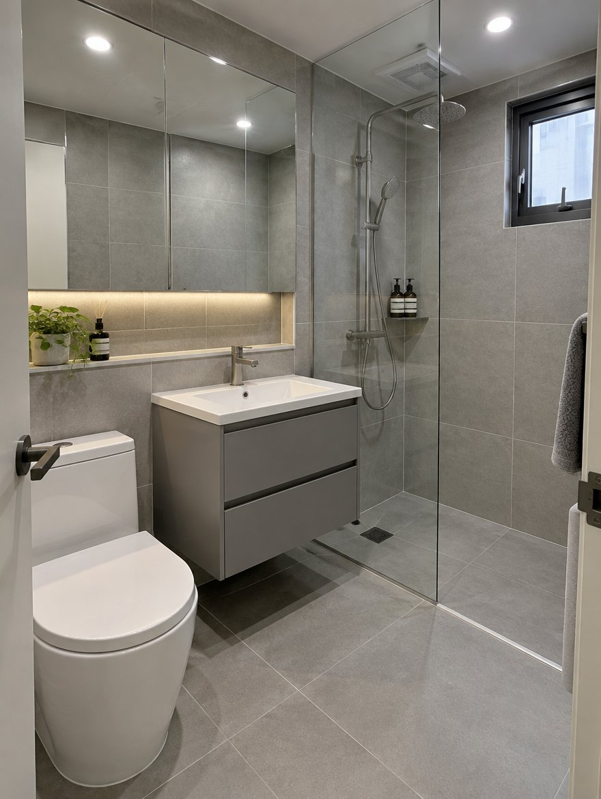
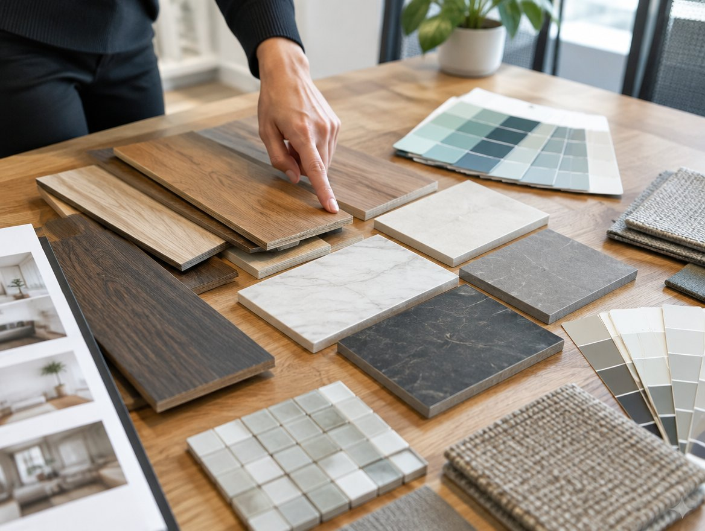
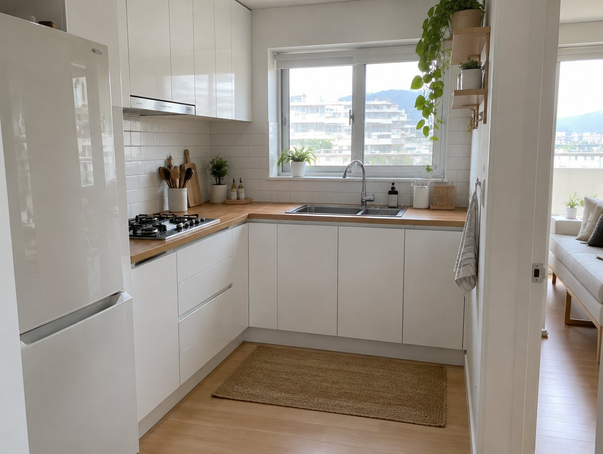
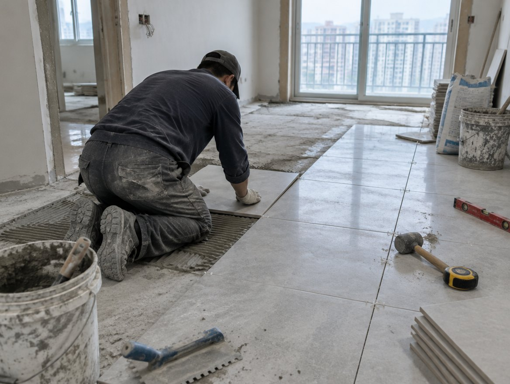
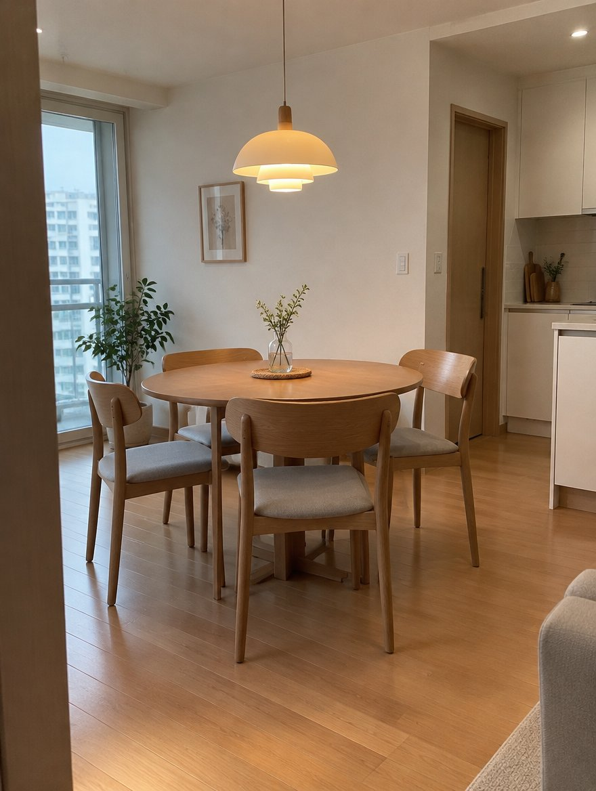
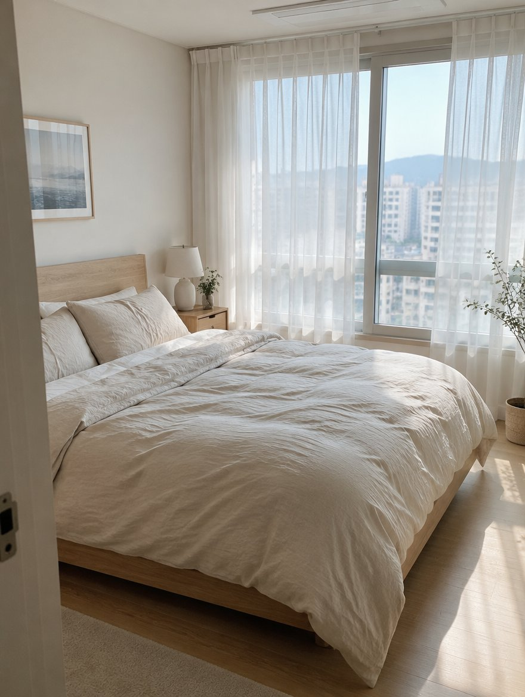
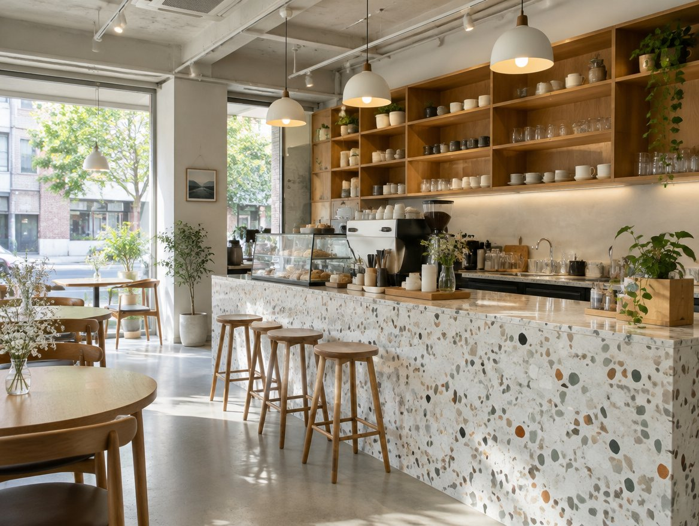

욕실
철거부터 방수 2회, 타일, 도기까지. 보통 4일이면 다시 쓰실 수 있습니다.


타일 몇 장, 방수 몇 번, 철거 폐기물 몇 톤까지 항목별로 나눠서 드립니다. 다른 곳 견적과 줄 맞춰 비교해 보셔도 됩니다.
공사 중에는 매일 저녁 사진 세 장과 다음 날 할 일을 문자로 보내 드립니다. 현장에 못 오셔도 진행 상황을 아실 수 있게요.

철거부터 방수 2회, 타일, 도기까지. 보통 4일이면 다시 쓰실 수 있습니다.

상판·싱크볼·벽 타일만 바꾸는 부분 교체도 합니다.

강마루·타일 바닥. 가구가 있는 집은 방 단위로 나눠 진행합니다.
직접 가서 재고 사진을 찍습니다.
3일 안에 항목마다 나눈 견적을 보내 드립니다.
날짜별로 무슨 작업을 하는지 미리 드립니다.
마감 후 1년 안에 생긴 하자는 다시 봐 드립니다.



네. 욕실 하나, 주방 상판 하나 같은 작은 공사가 대부분입니다.
수원 안에서는 실측과 견적 모두 무료입니다.
욕실 공사 중에는 소음과 먼지가 있어서, 철거 첫날만 피해 계시길 권해 드려요.
경기 수원시 권선구 예시로 78, 1층 사무실 · 세류역 1번 출구 도보 10분
영업시간·휴무·가격은 네이버 플레이스에서 가장 최신으로 확인하실 수 있어요.